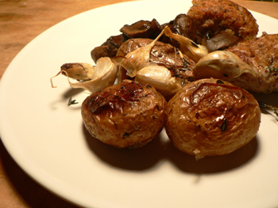

Blistered potatoes
After I saw this picture on the world’s favorite food blog, I couldn’t get the idea of overroasted potatoes out of my head. So it was that I ended up ordering a bag of buttercream fingerling potatoes from FreshDirect and making the same side dish two nights in a row, something I’ve rarely done. Last night, they accompanied a parmesan-crusted pork tenderloin and simmered mushrooms:

I’ve roasted potatoes ten thousand times, but none of them compare to these. I don’t know if it’s the variety of potato, or just the absurdly long time I left them in the oven (2 hours at 350ºF), but these elicited multiple moans of delight at the table, overshadowing the tenderloin. Nathan preferred the mushrooms, which I only cooked because they were about to spoil but which were nevertheless superb.
Blistered potatoes
Toss as many fingerling potatoes as you want to eat along with a handful of unpeeled garlic cloves in salt, pepper, a fresh herb such as thyme, and a generous amount of olive oil. Prick the potatoes lightly with a fork or paring knife. Roast in a roasting pan for at least 90 minutes, stirring occasionally (remove the garlic after 45 minutes if you plan to eat it, which you should). Only take them out when they seem to be collapsing under their own weight. The skin should be crispy and brown, the flesh pillowy.
Simmered mushrooms
Ingredients (for two servings)
2 tablespoons butter
1/2 pound button mushrooms (or whatever is cheapest), sliced in half cap to stem
1/2 cup white or red wine
1/2 cup stock
Heat the butter in a saucepan until it turns brown. Add the mushrooms, season them, and cook over high heat until their liquid is completely gone. Add the wine, and let that cook down all the way. Add the stock, bring to a simmer, lower the heat, and cook, covered, until the rest of your dinner is done, 30 or 45 minutes.
Comments
Pretty sure it’s the time factor.. I always throw some baby reds in the bottom of the pan when I’m slow roasting something and they come out much better than if i just put them in by themselves for a shorter time. I usually half them instead of piercing with a fork though.
although on second thought, it could be the juices from the roast that help the taste along.
Add a comment